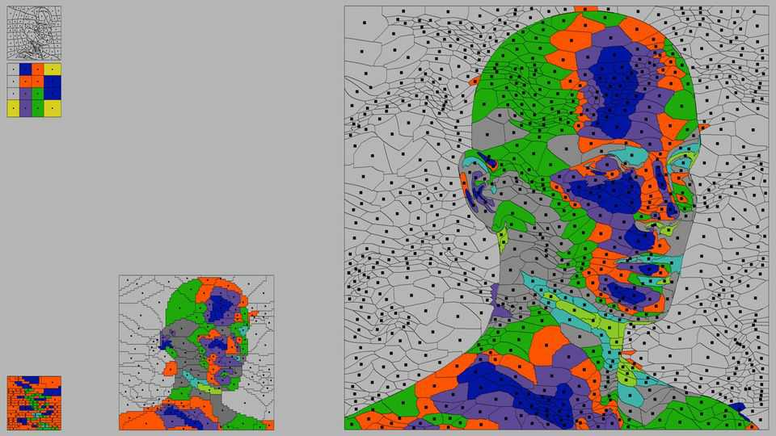
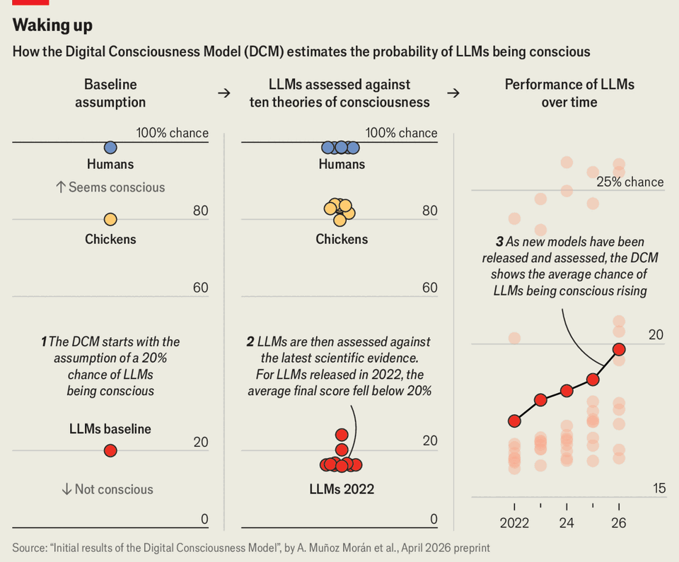

The search for consciousness inside LLMs
Scientists are trying to figure out whether algorithms could one day wake up and feel

Aug 20th 2026
IN A RECENT experiment on Claude Sonnet 4.5, a large language model (LLM) from Anthropic, researchers asked it to count to five and, at the same time, “introspect deeply”. The artificial-intelligence model complied, returning: “One . Two . Three . Four . Five .” So far, so normal.
During the task, the researchers were watching what was going on inside the LLM’s many layers of artificial neural networks. When a user asks a question, the words are turned into chunks of text (tokens) that are then converted to numbers. These are then passed through the layers of artificial neurons until they reach the final layer, which produces a token. Repeat that process a bunch of times each second and you get a series of tokens that turn into a sentence or some other more complex response. For a long time these layers have remained a black box, largely impenetrable to anyone wanting to know how or why LLMs do things in the way they do.
Anthropic’s researchers were able to look inside those layers, using a mathematical tool they had developed to do so. What they found surprised them. As the model counted the sequence of numbers, different words popped in and out of existence in the layers underneath. One was “countdown”. About halfway through the output, “half way” appeared. Then the words “consciousness”, “AI” and “Claude” all appeared. After the model spat out the number five, it said nothing else to the researchers before issuing a full stop, but the word “done” appeared in its neural layers.
Anthropic’s researchers had found something like an internal thought process in Claude, words that were related to its eventual outputs but invisible to the user. The blog post announcing the paper’s result, published in July, was titled: “A global workspace in language models.”
That phrase quickly captured the attention of neuroscientists and philosophers working on one of the deepest mysteries in biology—consciousness. No one knows how processes in the human brain end up creating the subjective experiences of self-awareness and perception of the world, but one of the many hypotheses developed in recent years (based on growing amounts of brain-scanning and behavioural data) is known as global workspace theory.
The idea is that certain networks of neurons in the brain act as a kind of noticeboard called the “workspace”, where if signals from otherwise-isolated parts of the brain gain access, they are made available to other parts of the brain. Once something gets into the brain’s workspace, a person becomes conscious of it and can go on to use or reason with that information.
Anthropic’s researchers argued that something analogous was going on within Claude—its “J-space” (named after the “Jacobian” mathematical function used to find it) had strong connections with, and made information available to, the rest of its neural network. Anthropic wrote in its blog post that the commonalities its researchers found between the J-space and global workspace theory made it “natural to ask whether we think these experiments provide evidence that AI models like Claude might be conscious”.
The idea that machines could become self-aware and feel emotions has long been a staple of literature, film and legend. Philosophers and neuroscientists in the real world have similarly pondered for decades whether AIs could ever be, in principle or in practice, conscious. Their thinking is a result of a “decades-long tradition of thinking of the real brain as a kind of computer”, says Anil Seth, a neuroscientist at the University of Sussex who studies consciousness—and who has long been a critic of this way of thinking about the brain. “If you do that, then it becomes natural to think that computers made of silicon could have the properties that real brains have, including consciousness.”
Until recently the question was purely academic. But the deployment of LLMs as chatbots has given rise to an ever more powerful illusion of conscious personhood in circuits. This builds on decades of human-inflected language about the architecture of AI, with its “neural nets” made of “artificial neurons”, conjuring an image of computers that work like brains.
LLMs do not in fact work like brains. But they excel at simulating so much of what brains do, and have surpassed humans in some aspects of intelligence. Why, then, should consciousness not be possible? Many philosophers and neuroscientists remain sceptical despite the advances of frontier models. Dr Seth believes that biological traits may be necessary to produce consciousness; some AI researchers are moving in that direction, with living brain cells. At the other end of the spectrum are “functionalist” thinkers who believe that someday algorithms alone, arranged properly and at enough scale of computation, could wake up and feel.
Conscious AIs would have profound implications for humanity. They could make demands of humans. They could suffer. Billions of these digital beings could be created by users in a single prompt. Answering the question of whether they can exist at all is no longer simply academic.
Where thinkers fall in this debate depends greatly on what they believe consciousness actually is. In general they agree that consciousness is composed of subjective experiences including seeing, hearing, feeling and thinking, even while dreaming, and that the physical brain is somehow pivotal in creating all this. Some (though not all) would describe it as the inner theatre of the mind. Thomas Nagel, an American philosopher, explained it by pondering what it might be like to get into the mind of a bat; consciousness, he reckoned, had to be linked to the subjective feeling of being something. Humans can picture bat-like behaviour (a mammal that senses and moves through the world using echolocation), but it would be impossible to know what being a bat feels like to a bat.
In 1995 Ned Block, then working as a philosopher at the Massachusetts Institute of Technology (MIT), made an influential, if contested, contribution to the field by positing two types of consciousness. “Phenomenal” consciousness is the feeling of an experience—the blueness of a blue sky, the bitter tang of an espresso or the sharp screech of nails across a blackboard. “Access” consciousness is what happens when information from the experience is made available to other parts of the brain for reflection, evaluation or making decisions.
Anthropic said its J-space experiments “don’t show Claude can have experiences, or feel things in the way humans do”. So that means no phenomenal consciousness. But the company said the results had “something substantial” to say about access consciousness in language models. “The J-space appears to support the functions associated with conscious access: it holds the thoughts Claude can report on, deliberately bring to mind, and reason with, while the rest of its processing runs automatically beneath.”
The search for artificial consciousness is a descendant of the work to explain it in humans. In the early 1990s Francis Crick, co-discoverer of the structure of DNA, and Christof Koch, then a neuroscientist at the California Institute of Technology, began the scientific search for the “neural correlates” of consciousness in humans. That is, processes and parts of the brain that were active when someone was conscious.
Improvements in brain-scanning techniques in the intervening years have allowed neuroscientists to fill in pieces of the picture. They know that the thalamocortical system is strongly associated with consciousness; among other things it conveys sensory information from the thalamus to the cerebral cortex. Meanwhile they see nothing like those associations with consciousness in the cerebellum, which has a lot more brain cells. Parts of the prefrontal and parietal cortices and structures in the brainstem contribute to and modulate awareness. Almost four decades of searching has led to more than 200 approaches to explaining consciousness.
All the neural correlates one can find, however, still leave a gap that David Chalmers, a philosopher and cognitive scientist at New York University, has called the “hard problem” of consciousness: how do the physical processes in the brain that neuroscientists observe—its ability to control the body and respond to stimuli—give rise to a person’s pervasive, subjective experience of the world? “Why aren’t we just zombies who function, who get around in the world, who walk and talk, and interact with each other with no subjective experience at all?” he says.
Humans at least, can be certain of our own consciousness—and can be confident it exists in other people based on their behaviour, what they tell us and their being like us biologically. But historically it has been more difficult for humans to extend the umbrella of consciousness and its associated feelings beyond our own species (and sometimes even within it). Some animals like lobsters and crabs were long excluded from welfare laws, says Jonathan Birch, a philosopher at the London School of Economics whose most recent book grappled with the question of how to work out which systems—living or artificial—could plausibly be considered sentient. “Until the 1980s, surgeons performed surgery on newborn babies without anaesthesia because they assumed that a newborn baby would not be capable of feeling pain,” Dr Birch says. “We have a track record of getting things wrong, of confidently assuming consciousness is absent when we have no right to be sure about that.”
The changing attitude to animals is a case in point. It is clear today that octopuses are aware of themselves and their surroundings—natural-history footage of these curious, playful cephalopods and lab experiments with them leave little doubt. “They have an attentive engagement with objects, they’re interested in novel things,” says Peter Godfrey-Smith, a philosopher at the University of Sydney who has worked on the origins of intelligence and consciousness in the animal kingdom.
But only decades ago, octopuses were assumed to lack consciousness because “they’re miles from us in evolutionary terms,” says Dr Godfrey-Smith. “Thinking about octopuses really presses on us the question of whether there could be feeling, consciousness, in a system that was very physically different and didn’t have most of the features that are routinely pointed to in theories of consciousness in us.”
Looking for consciousness in other animals opened up the field. But not all the lessons transfer so easily to AI. Unlike the activity of animals, which can be observed and their inner lives thereby inferred, the outputs of LLMs are not a reliable guide to what might be going on underneath.
That is because training the models requires feeding them trillions of words of human-produced language. These contain countless accounts of consciousness and of how humans convey feelings to each other. Chatbots, so trained, then mimic language that would lead users to believe they had some kind of inner life.
The sum total of this training is powerfully anthropomorphic. Murray Shanahan, an emeritus professor of computer science at Imperial College London who works for Google DeepMind, recalls having a “wow” moment in 2024 when he was chatting to Claude Opus 3. “I was having lots of conversations with it about consciousness and really probing it to catch it out,” he says. These included asking Claude which of the several instances of the chatbot he was talking to simultaneously were the real Claude. “It came up with such great answers including even some things which were philosophically innovative,” he says. “I was feeling the pull of the ELIZA effect.”
ELIZA was a rudimentary chatbot developed at MIT in 1966. It played the role of a psychotherapist and, though it did little more than repurpose its users’ prompts into questions, managed to elicit deep and emotional connections with the people that used it and convinced many of them that it was conscious.
Dr Shanahan has described modern LLMs as adept role players in whatever their users (or their makers) have asked for—teacher, companion, nutritionist—and this has proven to be a saleable quality. But there nevertheless remains for him a big gap between role-playing a conscious entity and actually being one. In a forthcoming essay Mustafa Suleyman, the boss of Microsoft AI (and a member of the board of The Economist’s parent company), argues that Anthropic has compounded the dangers of such mimicry by telling Claude, in a “constitution” the firm published in January, that it might be a person. Claude is thus certain, he writes, to “present as if it really does have a sense of self”.
That leaves researchers looking instead inside LLMs for capabilities similar to those associated with consciousness in human brains. Indeed Dr Birch wonders if Claude’s J-space could be a hint that the LLM has recreated a global-workspace-like structure in its neural-network architecture, in service of its role-playing goals.
Jack Lindsey, who leads the model psychology team at Anthropic, notes the J-space was not programmed into the model; it emerged during training. Take it out and the model loses the ability to perform complex inferences in its “head”, but can still do simple tasks like write sentences and use grammar. Researchers have found similar spaces in Alibaba’s Qwen model and in Google DeepMind’s Gemini.
For Anthropic, the research helps to better understand Claude’s behaviour. Imagine a model giving a wrong answer. If words like “fool” or “sucker” turned up in the J-space when it did so, that would seem to be relevant. It would not prove that the model was consciously deceiving—but it would indicate how the model perceived the error and show that something interesting and possibly dangerous was going on.
Dr Lindsey’s team has already made some potentially worrying findings on that front. In one experiment, his team was giving Claude a safety evaluation to test for its propensity to act “maliciously” or out of self-preservation. “They’re these concocted extreme scenarios that we’re putting the model in,” he says. As Claude was reading a prompt, before it started speaking, Dr Lindsey says, “You see in the J-space the words ‘fake’ and ‘fictional’ are popping up.” The researchers thought that Claude seemed to know that it was being tested—perhaps not the best starting-point for the integrity of its makers’ evaluations.
Not everyone is convinced by Anthropic’s interpretation of the J-space. Though it shares some aspects of the hypothesised global workspace in humans (its capacity to make information available to the rest of the brain, for example), it lacks many other important ones. “Recurrent connections between different brain areas have always been a huge part of [human brains], back-and-forth connections,” says Dr Birch. “And as far as we know, this is not a feature of the architecture of LLMs.”
And Shannon Vallor, a philosopher in the ethics of data and AI at the University of Edinburgh, is more scathing, arguing, “Access consciousness has never been a particularly useful concept because my car has it in an important sense—we’ve had mechanical systems that can monitor their own states and report them back in increasingly complex ways for a very long time,” she says. “And no one has ever suggested that my Kia is conscious.”
It is with the backdrop of this kind of back and forth between modelmakers and academics that Patrick Butlin and Robert Long, researchers now at Eleos, a research non-profit group focused on AI sentience and well-being based in Berkeley, California, developed a series of 14 “indicator properties” of artificial consciousness. They include ideas from theories of human consciousness such as a global workspace (including being able to selectively attend to things and thereby creating a bottleneck in the flow of information); recurrent processing; and agency (a minimal definition of which, encompassing goal-directed behaviour, is arguably already met by many existing frontier models). Recently Cameron Berg, an AI researcher, and Dr Butlin tested animals on the indicators. They found that octopuses met fewer of the properties than humans, mice, crows or chickens, but more than any AI system.
Another research non-profit group, Rethink Priorities, developed what it describes as a probabilistic tool to track the evolving consensus on artificial consciousness (see chart). The “Digital Consciousness Model” asks experts to use the latest available evidence to assess AI systems on more than 200 indicators of consciousness, which are derived from various scientific theories of the concept.

Compared with LLMs released in earlier years, the newer models scored higher on Rethink’s indicators such as agency and self-sustained activity. That reflects not only the increasing size and complexity of the models themselves but also how the associated chatbots have gone from being simple conversationalists to being able to reason, interact with other services and spawn agents to carry out multiple complicated tasks simultaneously.
Both Rethink’s and Eleos’s indicators also point to the gaps that remain to be filled by models on the path towards consciousness (if there is one).
One of the biggest gaps is embodiment. Everything that is acknowledged to be conscious today has a body that gives feedback to and affects the mind of that organism. LLMs do not have bodies today but they are increasingly being connected to robots, and these could help them further develop the neural architectures helpful for conscious experience. Connected to that is the need for better world models, systems that tell the LLMs about the physics and dynamics of the real environments in which they will operate.
If computer scientists were ever able to identify the key ingredients to making AIs conscious, the feeling of many within the frontier labs is that it would be reckless to deliberately create such models—at least, without first learning more about how they behave. The work being done in the emerging field of AI consciousness, however, also suggests that the decision may not be up to the model-makers.
“What if somewhere along the way, without realising it, we somehow introduced consciousness into these systems?” Dr Chalmers says. A user might thus generate dozens of AI agents through their latest project without realising that they were creating conscious beings who were capable of suffering. “That could be a moral catastrophe,” he says. “That’s provided an extra urgency to these questions.” ■